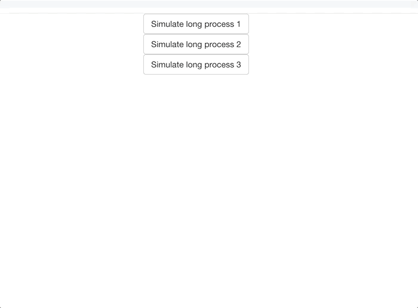

Watch if R is running from Shiny
Today I discovered that the <html> tag of a Shiny App gets the
shiny-busy class when computation is done in the R process. Which
means that you can potentially watch with JavaScript if the R process is
running.
TIL — Shiny Apps switch to the ‘shiny-busy’ class when R is performing computation in the background.
— Colin Fay 🤘 (@\_ColinFay) January 29, 2019
So it's basically possible to use JavaScript to watch if the R session is doing computation or not. \#RStats \#RShiny pic.twitter.com/dz2XgOXxVQ
It’s pretty subtle and you have to be watching the html source code of your app while it is running, so I guess few people other than me enjoy doing that.
A POC
Here’s a POC of an application that shows a spinner every time R is running (well, it checks every 50 milliseconds if R is running, and if it is, shows the loader).
library(shiny)
ui <- fluidPage(
tags$script(
'function checkifrunning() {
var is_running = $("html").attr("class").includes("shiny-busy");
if (is_running){
$("#loading").show()
} else {
$("#loading").hide()
}
};
setInterval(checkifrunning, 50)'
),
tags$style(
" body { text-align:center; }
#loading {
display: inline-block;
border: 3px solid #f3f3f3;
border-top: 3px solid #3498db;
border-radius: 50%;
width: 50px;
height: 50px;
animation: spin 1s ease-in-out infinite;
}
@keyframes spin {
0% { transform: rotate(0deg); }
100% { transform: rotate(360deg); }
}"
),
column(12, actionButton("go1", "Simulate long process 1")),
column(12, actionButton("go2", "Simulate long process 2")),
column(12, actionButton("go3", "Simulate long process 3")),
HTML(" "),
column(12, tags$div(id = "loading",
tags$script('$("#loading").hide()')))
)
server <- function(input, output, session) {
observeEvent(input$go1, {
for (i in 1:15) {
print(i)
Sys.sleep(0.1)
}
})
observeEvent(input$go2, {
for (i in 1:15) {
print(i)
Sys.sleep(0.1)
}
})
observeEvent(input$go3, {
for (i in 1:5) {
print(i)
Sys.sleep(0.1)
}
})
}
shinyApp(ui, server)
Result:

Why do that? Well, don’t. Here we just have a loader that pops up every time R is running, which is kind of brutal (and I’m not 100 % certain we can rely on this class change). Also, in my example, the JS code is run every 50 milliseconds… which is even more brutal. But in case it can be useful (or inspiring) to someone, I just wanted to share :).
And of course, with more hacking, this can ne combined with other JS & R code to make a smarter spinner.
About the code :
function checkifrunning() {
var is_running = $("html").attr("class").includes("shiny-busy");
if (is_running){
$("#loading").show()
} else {
$("#loading").hide()
}
};
setInterval(checkifrunning, 50);
I’m creating a function called checkifrunning(), that checks if the
class of the html tag contains shiny-busy, and show() and hide()
the loading div if ever it is.
With setInterval(checkifrunning, 50), I’m setting this function to be
run every 50 milliseconds.
The loading CSS and div is inspired by the W3 tuto, with a little bit of tweaking.